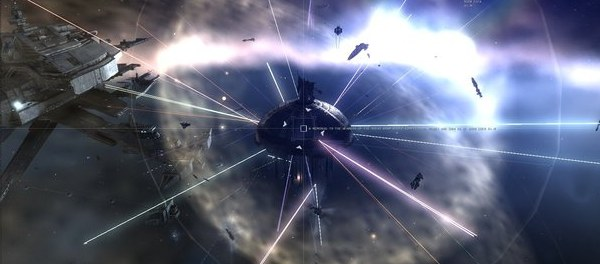

Massively multiplayer games have seen all manner of recapitulation of real-world emergent phenomena within their simulated realms (sometimes fostered and sometimes entirely unintended). But now, Rock, Paper Shotgun is reporting an on-line riot in the science fiction shooter MMORPG Eve On-line.


What RPS is describing alternately as a riot or protest.
Eurogamer is describing the symbolic attack on an indestructible in-game monument as “direct action”, though I would imagine given the controls in place by the developers that a more Miltonian phrase would be in order. It seems that the game’s developers have begun to introduce charges for developer access to the APIs and rather significantly-priced in-game clothing as well as micro-payment structures for in-game features and items.
No word yet as to whether there’s a stamp tax in the works.